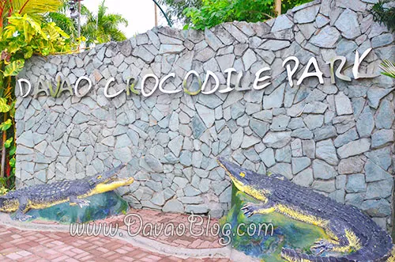
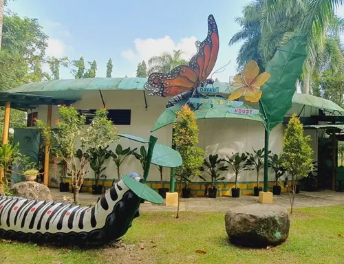
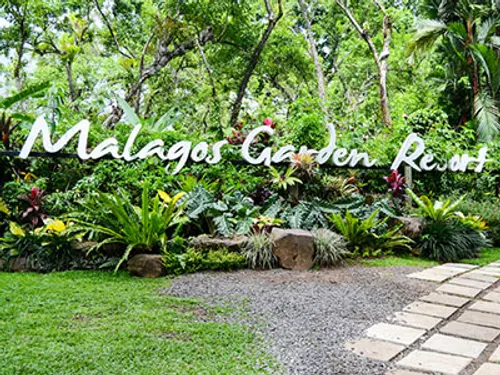
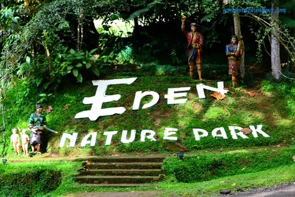

Davao’s Wildlife Adventures: Zoos and Nature Parks
Top Wildlife Destinations in Davao
Davao City is a haven for nature lovers and wildlife enthusiasts, offering a wide array of zoos, nature parks, and eco-tourism attractions. Known for its rich biodiversity and conservation efforts, the city is home to various wildlife sanctuaries, adventure parks, and interactive animal experiences. Whether you're visiting with family, friends, or solo, these Davao zoos and parks will surely give you an unforgettable wildlife adventure.

Davao Crocodile Park – The Ultimate Wildlife Experience
The Davao Crocodile Park stands as one of the city's premier wildlife attractions, offering visitors an up-close encounter with a diverse array of creatures. At its heart are the impressive collection of crocodiles, from hatchlings to fully grown adults, housed in carefully designed enclosures. Beyond the reptiles, the park also features a vibrant aviary with exotic birds displaying a spectrum of colors and calls, as well as a fascinating collection of snakes and other reptiles. To enhance the visitor experience, the park provides engaging educational tours that delve into the biology and conservation of these animals, opportunities for unique animal encounters, and the highly anticipated, thrilling crocodile feeding shows that demonstrate the raw power of these ancient predators.

Davao Butterfly House – A Magical Insect Sanctuary
A haven for nature lovers and those fascinated by the delicate beauty of insects, the Davao Butterfly House is an essential stop. This enchanting attraction allows visitors to immerse themselves in a world of vibrant, fluttering butterflies amidst lush, tropical gardens. Beyond the kaleidoscope of butterfly species, the house also showcases rare and exotic insects, offering a broader perspective on the region's entomological diversity. The experience is designed to be highly interactive and educational, providing valuable insights into the life cycles of various butterfly species, their unique characteristics, and their crucial ecological roles within the environment.

Malagos Garden Resort – Birds, Butterflies, and Chocolate-Making
More than just a sanctuary for wildlife, the Malagos Garden Resort is a comprehensive cultural and eco-tourism destination that offers a multifaceted experience. It has garnered acclaim for its captivating interactive bird shows, where trained birds demonstrate remarkable intelligence and perform engaging routines. Complementing this are its beautiful butterfly gardens, providing a serene space to observe these winged wonders. A significant highlight is its renowned cacao farm, which invites visitors to embark on a fascinating journey through the "bean-to-bar" chocolate-making process, from the cultivation of cacao pods to the creation of delicious chocolate treats.

Eden Nature Park – A Highland Wildlife Retreat
Spanning an expansive 100 hectares, Eden Nature Park is a breathtaking mountain resort that offers a rich tapestry of natural wonders and adventurous activities. Visitors are welcomed into a world of lush, verdant forests, where opportunities for wildlife encounters abound. The park provides an array of activities for the active explorer, including well-maintained hiking trails that wind through scenic landscapes, dedicated areas for bird watching, and vantage points offering stunning panoramic views. Guests can also immerse themselves in the beauty of its meticulously curated botanical gardens and explore its charming mini-zoo, which houses a variety of local and exotic animals.
Reference: davaodelnorte-wildlife